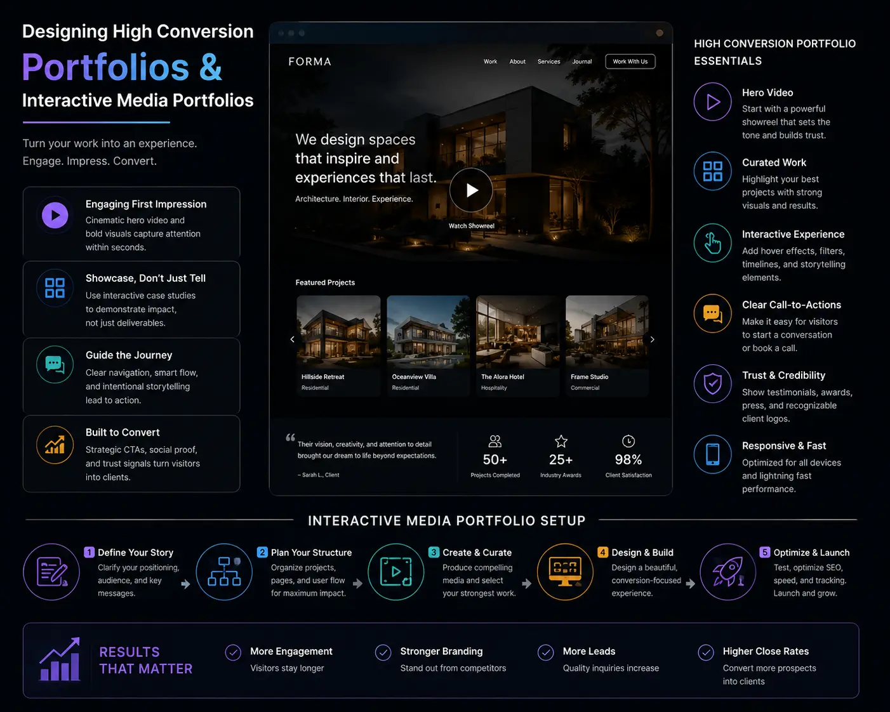
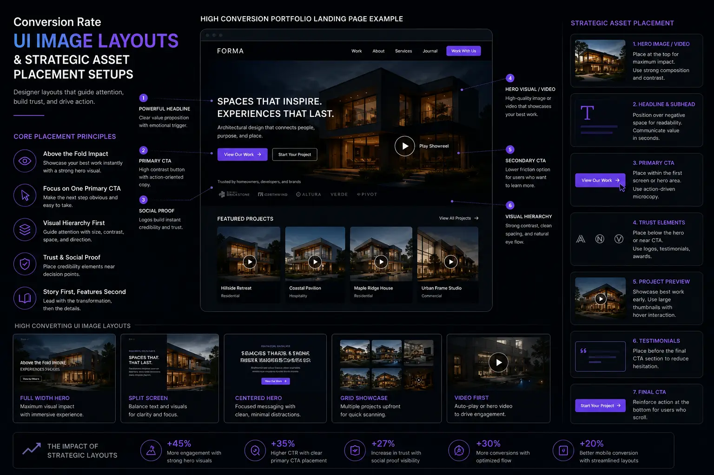

Architecting an Interactive Video Portfolio Page That Speeds Up Client Close Rates
The Portfolio Bottleneck: Why Static Pages Lose Hot Leads
For creative agencies, video production companies, and high-end services, the portfolio page is the most critical conversion point on their website. It is where prospects go to verify capabilities, inspect work quality, and decide whether to reach out. Yet, many businesses treat this page as a static gallery—a simple grid of thumbnails linking to external players.
This layout creates a bottleneck. It forces prospects to click back and forth, wait for external pages to load, and search for context, which can cause them to drop off. Modern portfolio pages must engage users immediately. By combining high-end **Website & Catalog Visual Production** with interactive design, brands can keep prospects engaged.
Through optimized **Conversion Rate UI Image Layouts** and custom **Interactive Media Portfolios**, brands can build pages that showcase capabilities and guide leads to conversion, shortening sales cycles.
UI Architecture: Designing for Engagement and Conversion
Creating a high-converting portfolio page requires careful asset placement and clear user paths.
- Strategic asset placement and visual structure. Use **Strategic asset placement** to organize projects by industry or service type. Place your highest-impact work at the top left (where users look first) and use hover-activated video loops to draw attention without slowing down the initial page load.
- Applying website photography composition rules. When designing layouts, apply **website photography composition rules**. Leave enough negative space around thumbnails to prevent visual clutter, and ensure the crop angles of your images guide the user's eye to key text and action buttons.
- Designing high-conversion portfolios with fast filtering. Successful **designing high-conversion portfolios** includes instant, tag-based filtering. Let prospects filter your work by vertical (e.g., E-commerce, Corporate, Startup) without reloading the page, helping them find relevant case studies quickly.
- Structured video case study page setup. Instead of just showing the video, use a **video case study page setup**. Pair each video with clear client metrics (e.g., +45% CTR, 2x Session Duration) and a short breakdown of the problem, solution, and results.
Speed Up Sales Cycles
Interactive portfolios let leads self-qualify by exploring relevant work. Giving them immediate answers reduces hesitation, leading to faster sales calls.
Increase Dwell Time
Engaging video previews and interactive metrics hold user attention. Longer dwell times improve brand trust and boost SEO rankings.
Build Case Study Proof
Pairing video clips with metrics demonstrates real business value. Prospects see that your work delivers actual ROI, not just pretty visuals.
Create a Modern Brand Presence
A fast, responsive, and interactive portfolio positions your agency as a forward-thinking business, building confidence with premium clients.

Asset Deployment: Speed and Performance Optimization
High-quality media assets can slow down page speeds. Follow these deployment standards to keep your portfolio fast and responsive.
- Smart media asset deployment systems. Set up a **media asset deployment** pipeline that hosts videos on fast CDNs. Use responsive player tags to serve optimized resolutions based on the user's device and connection speed.
- Hover-to-play visual previews. Avoid autoplaying multiple high-res videos at once. Instead, display optimized WebP thumbnails and only load and play WebM video loops when a user hovers over a project card, saving bandwidth.
- Setting up conversion rate UI image layouts. Build a **Conversion Rate UI Image Layout** that places a clear "Schedule a Call" button next to your case studies, allowing prospects to take action the moment they are impressed by your work.
- Designing a clean brand visibility layout. Ensure your portfolio reflects your brand identity. A clean **brand visibility layout** uses consistent typography, soft background tones, and clear spacing to keep the focus entirely on your work.
Portfolio Page Best Practices
Optimize your interactive portfolio page using this structural checklist.
Instant Filter Controls
- Implement client-side category filtering using JS (e.g., isotope or filterizr) to ensure instant transitions.
- Avoid page reloads when users switch between categories.
- Include a search bar to help users find specific projects quickly.
Video Case Study Structure
- Open with a 60-second video case study summarizing the project.
- Place three key metrics directly below the player (e.g., Dwell Time, Click-Through, ROI).
- Provide a short text breakdown of the challenge and solution for scanning users.
Unified Call to Action
- Place a sticky CTA button on the side or bottom of the case study page.
- Link the CTA directly to your calendar booking tool.
- Include a quick contact form to make reaching out easy.
Integrating Social Proof and Trust Signals
Pair your case studies with trust elements to build credibility.
- Inline client testimonials. Place a short quote from the client next to the project video, reinforcing your capability claims.
- Showcasing client logos. Add a clean grid of client logos to your home or portfolio page to establish immediate authority.
- Behind-the-scenes B-roll. Include short clips of your team at work to humanize your brand and show your production standards.

Conclusion
An interactive video portfolio is a powerful tool to engage prospects and boost close rates. By combining high-end **Website & Catalog Visual Production** with interactive design, brands can guide leads to conversion.
Through fast asset deployment, conversion-focused UI layouts, and **designing high-conversion portfolios**, you can showcase your work and turn visitors into clients.
At The PhD Ads in Madurai, we build custom **Interactive Media Portfolios**, set up structured **video case study page setups**, and design optimized layouts to help businesses grow.
Key Topics
Build a High-Converting Portfolio Page
Ready to upgrade your website with an interactive video portfolio page that converts? At The PhD Ads in Madurai, we design optimized media pages and case study setups that turn prospects into clients.
Email: team@e2o.in